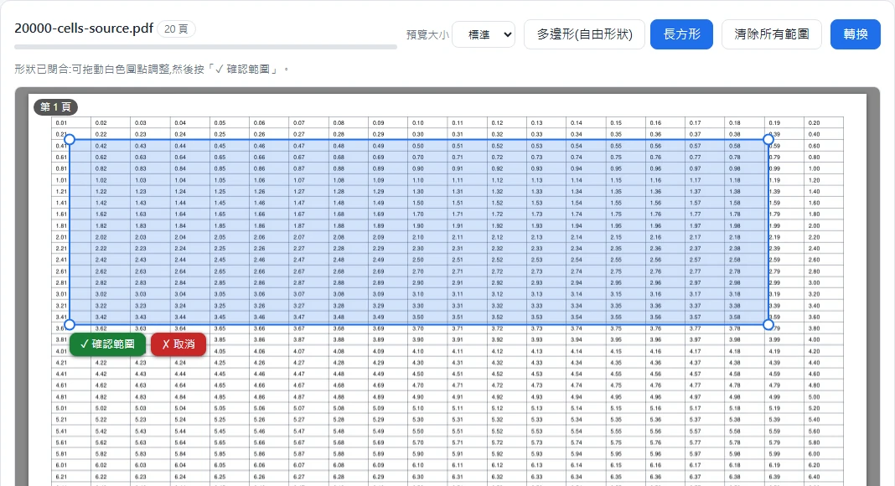
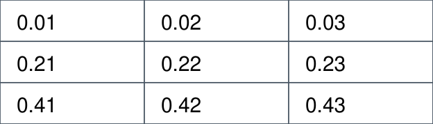

ENGINEERING NOTES
我怎樣做
以往同事試過商用 OCR，但格數太多、掃描質素參差，效果差，OCR 後仍要逐格人手覆核；平均兩個工作天（16 小時）才交到一份核實無誤的 Excel。現在約 30 分鐘。工程師已用於 30 多份文件。抽查準確率 99.99%：生產流程按風險抽查，由獨立視覺模型在看不到 App 數值的情況下盲讀，抽中錯誤即擴大至整欄、整表或整份。全格視覺覆核可達 100%，但 API 成本約為抽查的 20 倍，這是按交付要求取捨的工程決定。
辨認表格
先讀 PDF 文字層及座標，按需要由 OpenCV 分析格線，再處理難辨字形。
保留數值
Python 重建列欄，把可計算的數字寫回正確格位；疑點保留給人核對。
回歸驗收
改規則後用標準答案逐格比較。你可下載原程式輸出，在瀏覽器重跑兩萬格驗收。
- PyMuPDF
- OpenCV
- RapidOCR
- openpyxl
ENGINEERING REVIEW
工程細節
問題與限制
- 報表由 Excel 輸出成 PDF，單份可達兩萬多格；一格錯，下游計算就錯。
- 三種來源：有文字層、輪廓字或圖像、CAD 圖紙（零寬度線、SHX 筆劃字）。
- 資料不外傳，在本機處理。
實際成果
一份核實無誤的 Excel 由平均兩個工作天（16 小時）縮至約 30 分鐘。以往同事試過商用 OCR，格數太多、掃描質素參差，OCR 後仍要逐格人手覆核。
抽查準確率 99.99%：生產流程按風險抽查，由獨立視覺模型盲讀必讀格及分層隨機樣本，抽中錯誤即擴大至整欄、整表或整份。全格視覺覆核可達 100%，但 API 成本約為抽查的 20 倍。
全格盲讀驗證：最大一份正文 22,766 格 + 表頭 591 格全部盲讀，425 處差異全部是 App 錯並已改正，17 格是盲讀者抄錯；另一份 7,695 格差異 0。
工程師已用於 30 多份文件。
架構：模型、程式與人手的分工
- 程式讀版面
讀 PDF 文字層和座標；有需要時以 OpenCV 找格線，重建列欄。
- 模型OCR
RapidOCR（GPU）作為第三個讀法。
- 程式三讀法比對
圖形引擎、字型重畫和 OCR 逐格比對；一致才給高把握，不一致標為可疑。
- 模型盲讀抽查
獨立代理用視覺模型盲讀（看不到 App 數值）：高風險格必讀，其餘數字格分層抽樣，抽中錯誤即擴大範圍。
- 程式加總與回歸
有 SUM／TOTAL 的表做欄加總核對；改規則後用舊文件的標準答案逐格回歸。
- 人手確認差異
可疑格及差異以 PDF 為準由人確認；答案寫入字形字典和表頭別名。
模型與成本
每一步用甚麼、為甚麼，以及費用省在哪裏。表內只列做法；比較數字只寫已量度的。
| 步驟 | 用甚麼 | 為甚麼 | 省在哪裏 |
|---|---|---|---|
| 讀數字 | 程式PDF 文字層；沒有文字層時做字形比對 | 同形字形歸為一類：一份文件約只有 40 種字形，每種只認一次 | 讀數字不呼叫模型 |
| OCR | 本機模型本機 GPU 跑 RapidOCR | 作為第三個讀法，與另外兩個讀法逐格比對 | 1,800 格的辨識由約 40 秒降到 2.3 秒，不用雲端 OCR 服務 |
| 比對與加總 | 程式三個讀法一致才給高把握；有 SUM／TOTAL 的表做加總核對 | 程式能找出的錯誤先由程式找出 | 只把可疑格交給下一步 |
| 盲讀抽查 | 雲端視覺模型獨立代理用視覺模型盲讀 | 高風險格必讀，其餘數字格分層抽樣；抽中錯誤才擴大至整欄、整表或整份 | 全格視覺覆核的 API 成本約為抽查的 20 倍 |
| 確認差異 | 人手人按 PDF 確認可疑格 | 答案寫入字形字典和表頭別名 | 之後的文件遇到同一字形，直接用已確認的答案 |
關鍵決定與取捨
採用按風險抽查控制成本
不採用每格都用視覺模型覆核
抽查準確率為 99.99%；全格視覺覆核可達 100%，但 API 成本約為抽查的 20 倍。生產流程按交付要求選擇抽查。
採用三個讀法交叉
不採用只靠一個 OCR
OCR 對細小數字最弱。只有 OCR 不同、另外兩個讀法一致的格只記錄不標紅：在一份文件中這類格全部正確，標紅只會拉長核對清單。
採用盲讀（讀者看不到 App 數值）
不採用讓 AI 看著 App 結果「確認」
避免讀者被 App 的答案帶偏，差異才有意義。
採用GPU OCR
不採用CPU OCR
1,800 格的辨識由約 40 秒降到 2.3 秒。
評估：抽查準確率 99.99% 怎樣量度
99.99% 來自生產流程的抽查，不是逐格全讀。讀者是獨立的視覺模型，只看原 PDF 圖像，看不到 App 的數值。
- 01必讀格高風險格全部盲讀
- 02分層隨機抽樣其餘數字格抽 10%
- 03升級抽中錯誤即擴大範圍
01必讀格
- 所有文字、表頭及單位格（易混字形：6/0、1/I、5/S、8/B）
- App 自己標為可疑的格
- 有前導零的整數（曾有一份文件 18 格全錯）
- 違反自動偵測欄關係（A + B = C）的格
- 與重複欄數值不一致的格
- App 留空但圖像上有墨跡的格
- 與第二個 OCR 引擎讀法不同的格
- 列結構可疑的整張表（格線數 ≠ 列數）
02分層隨機抽樣
- 最少 300 格、最多 3,000 格
- 每欄至少 2–8 格，整欄性的系統錯誤幾乎必定被抽中
03升級
- 抽中一格錯 → 讀整欄
- 多欄有錯 → 讀整張表
- 抽樣錯誤超過 5 格 → 整份文件全格盲讀
- 抽查準確率 99.99%
生產流程按上方三層方法抽查：必讀格、分層隨機抽樣及升級規則。
- 22,766 格
全格盲讀驗證：最大一份正文 22,766 格 + 表頭 591 格全部盲讀。425 處差異全部是 App 錯，已改正；另有 17 格是盲讀者抄錯。
- 0 差異
全格盲讀驗證：另一份 7,695 格全部盲讀，與 App 輸出差異 0。
- 160 → 2
學習迴圈第一輪：同一份文件的可疑格由 160 降到 2。
- 0 靜默錯誤
新規則抽樣：77 個文字格錯誤全部被標為可疑。
- 15,400 格
核對第三方提供的 Excel：全部比對，1 處差異（查證後 Excel 正確）。
掃描件及錯位表格是已知難點，會轉為人手盲讀。
失敗情況與防護
| 可能出錯 | 防護 |
|---|---|
| 掃描件、表格錯位 | 結構不穩時整份轉為人手盲讀，不交 App 結果。 |
| 小數點被 OCR 吃掉 | 比對時改比數字串，數字相同才算一致。 |
| App 錯了卻沒有標出（靜默錯誤） | 盲讀 + 欄加總雙重檢查；抽樣量度靜默錯誤數。 |
| 改規則後舊文件變差 | 用已核對的文件做逐格回歸。 |
# ocr3.py：三個讀法（圖形引擎、字型重畫、OCR）逐格比對
if same:
info["agree"] += 1
if getattr(c, "fit_ok", False) and c.chk != "bad":
c.conf = max(c.conf, 0.95) # three readers agree
c.chk = "ok|" + t
elif (getattr(c, "fit_ok", False) or not font_known) and c.chk != "bad":
# 只有 OCR 不同，而引擎與字型重畫一致：OCR 對細小數字最弱，只記錄、不標紅
c.chk = "ocr_only"
c.third = r
else:
c.conf = min(c.conf, 0.2)
c.chk = "bad" # 可疑：交人以 PDF 為準確認
info["flagged"] += 1Gary 指定：只有三個讀法一致才給高把握，不一致的格交盲測核對；並用已核對的文件做逐格回歸。
INTERACTIVE
親手試用
20,000 格
20 頁
每頁 50 行 × 20 欄

Excel 輸出 點選數值核對
查看全部 20 頁及覆核測試
示例表共 20,000 格，文字層與指定選區測試全部吻合。

原 PDF 第 1 頁。切換頁數可對照相同頁的 Excel 輸出。
點選儲存格查看位置及實際數值，橫向捲動可看全部 20 欄。
遇到疑點，怎樣處理？
欄名疑點覆核
示例例子：影像辨識讀出 Mx-x，但這類欄名的 x／y 容易混淆。原程式保留讀值，交人回看原圖。
- 觸發：影像讀值符合容易混淆的欄名規則。
- Python：
needs_review標記待人覆核，不猜成另一個欄名。 - 修正：人回看來源及欄位關係，確認後才修改或保留。
原函數已用三個示例儲存格測試。此互動展示已儲存的判斷，沒有即時執行 OCR。查看測試紀錄 ↗
交付前，逐格驗收
一張表看起來完整，仍可能有數字被存成文字，或落在隔壁一欄。我用有標準答案的測試表，把輸出的格位、資料型別和數值逐一比對。
你可以在瀏覽器讀取原程式匯出的 Excel，重跑這項檢查。
下載同一份 Excel ↓20 頁 × 50 行 × 20 欄
按下核對後，逐頁檢查 Excel。
原轉換測試紀錄 ↗ 測試範圍為已指定選區的文字型 PDF。掃描件及 OCR 需另行驗證。